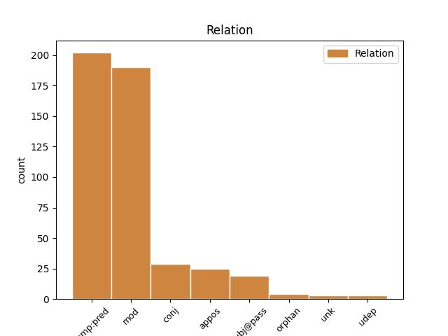
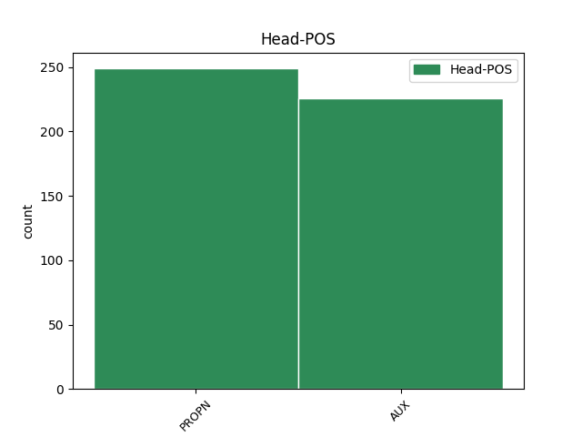
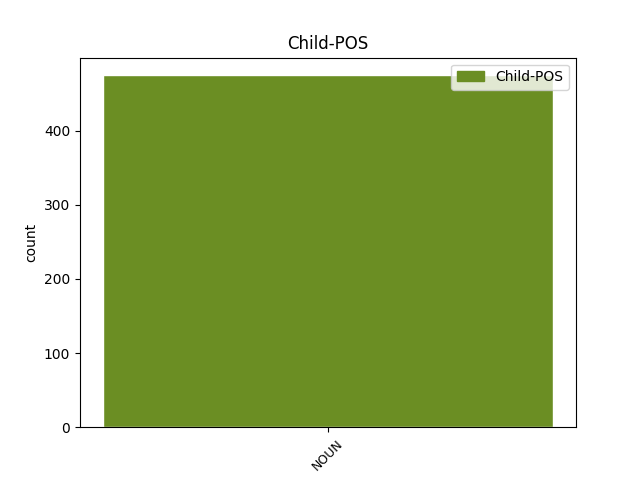

Distribution of features within this leaf



Agreement Rules sorted by frequency.
- When the dependent token is the modifer(mod) of the head token, and the head token is PROPN and the dependent token is NOUN.
1 Primátor primátor NOUN SSms1 Animacy=Anim|Case=Nom|Gender=Masc|Number=Sing 4 mod _ _
2 Komárna _ _ _ _ 0 _ _ _
3 Štefan _ _ _ _ 0 _ _ _
4 Pásztor pásztor PROPN SSms1:r Animacy=Anim|Case=Nom|Gender=Masc|Number=Sing 0 _ _ _
5 po _ _ _ _ 0 _ _ _
6 svojej _ _ _ _ 0 _ _ _
7 sekretárke _ _ _ _ 0 _ _ _
8 odkázal _ _ _ _ 0 _ _ _
9 SME _ _ _ _ 0 _ _ _
10 , _ _ _ _ 0 _ _ _
11 že _ _ _ _ 0 _ _ _
12 sa _ _ _ _ 0 _ _ _
13 k _ _ _ _ 0 _ _ _
14 problému _ _ _ _ 0 _ _ _
15 nevyjadrí _ _ _ _ 0 _ _ _
16 . _ _ _ _ 0 _ _ _
1 Dôvodom dôvod NOUN SSis7 Animacy=Inan|Case=Ins|Gender=Masc|Number=Sing 2 comp:pred _ _
2 bol byť AUX VLesci+ Animacy=Inan|Aspect=Imp|Gender=Masc|Number=Sing|Polarity=Pos|Tense=Past|VerbForm=Part 0 _ _ _
3 práve _ _ _ _ 0 _ _ _
4 nevyriešený _ _ _ _ 0 _ _ _
5 problém _ _ _ _ 0 _ _ _
6 umiestnenia _ _ _ _ 0 _ _ _
7 štyri _ _ _ _ 0 _ _ _
8 metre _ _ _ _ 0 _ _ _
9 vysokého _ _ _ _ 0 _ _ _
10 súsošia _ _ _ _ 0 _ _ _
11 sv _ _ _ _ 0 _ _ _
12 . _ _ _ _ 0 _ _ _
13 Cyrila _ _ _ _ 0 _ _ _
14 a _ _ _ _ 0 _ _ _
15 Metoda _ _ _ _ 0 _ _ _
16 v _ _ _ _ 0 _ _ _
17 Komárne _ _ _ _ 0 _ _ _
18 . _ _ _ _ 0 _ _ _
1 Malo _ _ _ _ 0 _ _ _
2 by _ _ _ _ 0 _ _ _
3 ísť _ _ _ _ 0 _ _ _
4 o _ _ _ _ 0 _ _ _
5 Benedikta benedikt PROPN SSms4:r Animacy=Anim|Case=Acc|Gender=Masc|Number=Sing 0 _ _ _
6 , _ _ _ _ 0 _ _ _
7 Cyrila _ _ _ _ 0 _ _ _
8 , _ _ _ _ 0 _ _ _
9 Metoda _ _ _ _ 0 _ _ _
10 , _ _ _ _ 0 _ _ _
11 Brigitu _ _ _ _ 0 _ _ _
12 , _ _ _ _ 0 _ _ _
13 Katarínu _ _ _ _ 0 _ _ _
14 a _ _ _ _ 0 _ _ _
15 Teréziu _ _ _ _ 0 _ _ _
16 , _ _ _ _ 0 _ _ _
17 všetko _ _ _ _ 0 _ _ _
18 svätých svätý NOUN SAmp4 Animacy=Anim|Case=Acc|Gender=Masc|Number=Plur 5 appos _ SpaceAfter=No
19 . _ _ _ _ 0 _ _ _
1 Vláda _ _ _ _ 0 _ _ _
2 bude _ _ _ _ 0 _ _ _
3 hľadať _ _ _ _ 0 _ _ _
4 spôsoby _ _ _ _ 0 _ _ _
5 legislatívnej _ _ _ _ 0 _ _ _
6 úpravy _ _ _ _ 0 _ _ _
7 , _ _ _ _ 0 _ _ _
8 aby _ _ _ _ 0 _ _ _
9 v _ _ _ _ 0 _ _ _
10 Národnej _ _ _ _ 0 _ _ _
11 rade _ _ _ _ 0 _ _ _
12 SR _ _ _ _ 0 _ _ _
13 neboli byť AUX VLepci- Animacy=Inan|Aspect=Imp|Gender=Masc|Number=Plur|Polarity=Neg|Tense=Past|VerbForm=Part 0 _ _ _
14 prijímané _ _ _ _ 0 _ _ _
15 zákony zákon NOUN SSip1 Animacy=Inan|Case=Nom|Gender=Masc|Number=Plur 13 subj@pass _ _
16 s _ _ _ _ 0 _ _ _
17 nekrytými _ _ _ _ 0 _ _ _
18 rozpočtovými _ _ _ _ 0 _ _ _
19 dôsledkami _ _ _ _ 0 _ _ _
20 . _ _ _ _ 0 _ _ _
1 Vilko vilko PROPN SSms1:r Animacy=Anim|Case=Nom|Gender=Masc|Number=Sing 0 _ _ _
2 a _ _ _ _ 0 _ _ _
3 mravce mravec NOUN SSip1 Animacy=Inan|Case=Nom|Gender=Masc|Number=Plur 1 conj _ _
1 Petrovi peter PROPN SSms3:r Animacy=Anim|Case=Dat|Gender=Masc|Number=Sing 0 _ _ _
2 Tvorjata _ _ _ _ 0 _ _ _
3 / _ _ _ _ 0 _ _ _
4 list list NOUN SSis1 Animacy=Inan|Case=Nom|Gender=Masc|Number=Sing 1 unk _ _
5 dvoch _ _ _ _ 0 _ _ _
6 spolupracovníkov _ _ _ _ 0 _ _ _
7 / _ _ _ _ 0 _ _ _
1 Roku rok NOUN SSis2 Animacy=Inan|Case=Gen|Gender=Masc|Number=Sing 8 udep _ _
2 1966 _ _ _ _ 0 _ _ _
3 pri _ _ _ _ 0 _ _ _
4 vykopávkach _ _ _ _ 0 _ _ _
5 v _ _ _ _ 0 _ _ _
6 Iľjinskom _ _ _ _ 0 _ _ _
7 rajóne _ _ _ _ 0 _ _ _
8 bol byť AUX VLesci+ Animacy=Inan|Aspect=Imp|Gender=Masc|Number=Sing|Polarity=Pos|Tense=Past|VerbForm=Part 0 _ _ _
9 nájdený _ _ _ _ 0 _ _ _
10 stredný _ _ _ _ 0 _ _ _
11 trám _ _ _ _ 0 _ _ _
12 s _ _ _ _ 0 _ _ _
13 tlamou _ _ _ _ 0 _ _ _
14 draka _ _ _ _ 0 _ _ _
15 . _ _ _ _ 0 _ _ _
1 Zakrátko _ _ _ _ 0 _ _ _
2 si _ _ _ _ 0 _ _ _
3 Makulienka _ _ _ _ 0 _ _ _
4 obliekala _ _ _ _ 0 _ _ _
5 novú _ _ _ _ 0 _ _ _
6 sukničku _ _ _ _ 0 _ _ _
7 s _ _ _ _ 0 _ _ _
8 volánikmi _ _ _ _ 0 _ _ _
9 a _ _ _ _ 0 _ _ _
10 motýľ _ _ _ _ 0 _ _ _
11 Emanuel emanuel PROPN SSms1:r Animacy=Anim|Case=Nom|Gender=Masc|Number=Sing 0 _ _ _
12 frak frak NOUN SSis4 Animacy=Inan|Case=Acc|Gender=Masc|Number=Sing 11 orphan _ _
13 s _ _ _ _ 0 _ _ _
14 dlhými _ _ _ _ 0 _ _ _
15 krídlami _ _ _ _ 0 _ _ _
16 . _ _ _ _ 0 _ _ _
1 Stoly _ _ _ _ 0 _ _ _
2 a _ _ _ _ 0 _ _ _
3 stoličky _ _ _ _ 0 _ _ _
4 boli byť AUX VLepcf+ Aspect=Imp|Gender=Fem|Number=Plur|Polarity=Pos|Tense=Past|VerbForm=Part 0 _ _ _
5 prevrhnuté _ _ _ _ 0 _ _ _
6 , _ _ _ _ 0 _ _ _
7 vázy váza NOUN SSfp1 Case=Nom|Gender=Fem|Number=Plur 4 conj _ _
8 rozbité _ _ _ _ 0 _ _ _
9 a _ _ _ _ 0 _ _ _
10 obrazy _ _ _ _ 0 _ _ _
11 viseli _ _ _ _ 0 _ _ _
12 nakrivo _ _ _ _ 0 _ _ _
13 . _ _ _ _ 0 _ _ _
1 Pedra pedro PROPN SSms4:r Animacy=Anim|Case=Acc|Gender=Masc|Number=Sing 0 _ _ _
2 totiž _ _ _ _ 0 _ _ _
3 široko _ _ _ _ 0 _ _ _
4 ‐ _ _ _ _ 0 _ _ _
5 ďaleko _ _ _ _ 0 _ _ _
6 poznali _ _ _ _ 0 _ _ _
7 ako _ _ _ _ 0 _ _ _
8 záletníka záletník NOUN SSms4 Animacy=Anim|Case=Acc|Gender=Masc|Number=Sing 1 comp:pred _ _
9 a _ _ _ _ 0 _ _ _
10 donchuana _ _ _ _ 0 _ _ _
11 . _ _ _ _ 0 _ _ _
Disagree Examples:
1 . _ _ _ _ 0 _ _ _
2 . _ _ _ _ 0 _ _ _
3 . _ _ _ _ 0 _ _ _
4 MÔJ _ _ _ _ 0 _ _ _
5 PRIMÁRNY _ _ _ _ 0 _ _ _
6 ZÁUJEM záujem NOUN SSis1 Animacy=Inan|Case=Nom|Gender=Masc|Number=Sing 7 comp:pred _ _
7 BOLI byť AUX VLepcn+ Aspect=Imp|Gender=Neut|Number=Plur|Polarity=Pos|Tense=Past|VerbForm=Part 0 _ _ _
8 HUMANIÓRA _ _ _ _ 0 _ _ _
9 . _ _ _ _ 0 _ _ _
1 Ukazuje _ _ _ _ 0 _ _ _
2 sa _ _ _ _ 0 _ _ _
3 teda _ _ _ _ 0 _ _ _
4 , _ _ _ _ 0 _ _ _
5 že _ _ _ _ 0 _ _ _
6 tým _ _ _ _ 0 _ _ _
7 stredoslovenským _ _ _ _ 0 _ _ _
8 nárečím nárečie NOUN SSns7 Case=Ins|Gender=Neut|Number=Sing 17 comp:pred _ SpaceAfter=No
9 , _ _ _ _ 0 _ _ _
10 ktorÉ _ _ _ _ 0 _ _ _
11 Štúrovci _ _ _ _ 0 _ _ _
12 povýšili _ _ _ _ 0 _ _ _
13 na _ _ _ _ 0 _ _ _
14 spisovný _ _ _ _ 0 _ _ _
15 JAZYK _ _ _ _ 0 _ _ _
16 , _ _ _ _ 0 _ _ _
17 bol byť AUX VLesci+ Animacy=Inan|Aspect=Imp|Gender=Masc|Number=Sing|Polarity=Pos|Tense=Past|VerbForm=Part 0 _ _ _
18 prestížny _ _ _ _ 0 _ _ _
19 liptovský _ _ _ _ 0 _ _ _
20 mestský _ _ _ _ 0 _ _ _
21 jazyk _ _ _ _ 0 _ _ _
22 . _ _ _ _ 0 _ _ _
1 Kompletný _ _ _ _ 0 _ _ _
2 program _ _ _ _ 0 _ _ _
3 3 _ _ _ _ 0 _ _ _
4 . _ _ _ _ 0 _ _ _
5 Gay _ _ _ _ 0 _ _ _
6 Film _ _ _ _ 0 _ _ _
7 Festivalu _ _ _ _ 0 _ _ _
8 Slovakia _ _ _ _ 0 _ _ _
9 nájdete _ _ _ _ 0 _ _ _
10 na _ _ _ _ 0 _ _ _
11 Film _ _ _ _ 0 _ _ _
12 Site _ _ _ _ 0 _ _ _
13 v _ _ _ _ 0 _ _ _
14 rubrike _ _ _ _ 0 _ _ _
15 Ceny cena PROPN SSfp1:r Case=Nom|Gender=Fem|Number=Plur 0 _ _ _
16 a _ _ _ _ 0 _ _ _
17 festivaly festival NOUN SSip1 Animacy=Inan|Case=Nom|Gender=Masc|Number=Plur 15 conj _ SpaceAfter=No
18 . _ _ _ _ 0 _ _ _
1 Od _ _ _ _ 0 _ _ _
2 malička _ _ _ _ 0 _ _ _
3 mi _ _ _ _ 0 _ _ _
4 bolo byť AUX VLescn+ Aspect=Imp|Gender=Neut|Number=Sing|Polarity=Pos|Tense=Past|VerbForm=Part 0 _ _ _
5 z _ _ _ _ 0 _ _ _
6 každej _ _ _ _ 0 _ _ _
7 strany _ _ _ _ 0 _ _ _
8 vštepovaných _ _ _ _ 0 _ _ _
9 niekoľko _ _ _ _ 0 _ _ _
10 vecí vec NOUN SSfp2 Case=Gen|Gender=Fem|Number=Plur 4 subj@pass _ SpaceAfter=No
11 . _ _ _ _ 0 _ _ _
1 Za _ _ _ _ 0 _ _ _
2 slovenskú _ _ _ _ 0 _ _ _
3 stranu _ _ _ _ 0 _ _ _
4 sa _ _ _ _ 0 _ _ _
5 tradične _ _ _ _ 0 _ _ _
6 na _ _ _ _ 0 _ _ _
7 organizácii _ _ _ _ 0 _ _ _
8 prehliadky _ _ _ _ 0 _ _ _
9 podieľa _ _ _ _ 0 _ _ _
10 Slovenský _ _ _ _ 0 _ _ _
11 filmový _ _ _ _ 0 _ _ _
12 ústav _ _ _ _ 0 _ _ _
13 a _ _ _ _ 0 _ _ _
14 Asociácia asociácia PROPN SSfs1:r Case=Nom|Gender=Fem|Number=Sing 0 _ _ _
15 slovenských _ _ _ _ 0 _ _ _
16 filmových _ _ _ _ 0 _ _ _
17 klubov klub NOUN SSip2 Animacy=Inan|Case=Gen|Gender=Masc|Number=Plur 14 mod _ SpaceAfter=No
18 , _ _ _ _ 0 _ _ _
19 ktorá _ _ _ _ 0 _ _ _
20 prostredníctvom _ _ _ _ 0 _ _ _
21 MK _ _ _ _ 0 _ _ _
22 SR _ _ _ _ 0 _ _ _
23 udeľuje _ _ _ _ 0 _ _ _
24 na _ _ _ _ 0 _ _ _
25 prehliadke _ _ _ _ 0 _ _ _
26 Hlavnú _ _ _ _ 0 _ _ _
27 cenu _ _ _ _ 0 _ _ _
28 Zlatý _ _ _ _ 0 _ _ _
29 debut _ _ _ _ 0 _ _ _
30 . _ _ _ _ 0 _ _ _